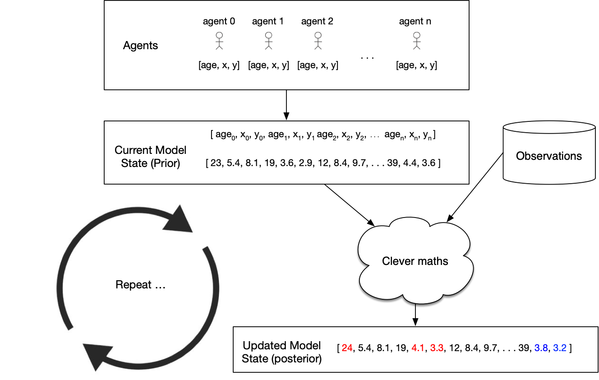

GISRUK 2023. University of Glasgow, 19-21 April 2023
Virtual Mirrors or Smoke and Mirrors?
Can Urban Digital Twins Make Cities Better?
Nick Malleson, University of Leeds, UK
Slides available at:
https://urban-analytics.github.io/dust/presentations.html
Critical (urban?) social problems
Children in the most deprived neighbourhoods have 10 year shorter life expectancy than those born in affluent neighbourhoods.
The use of food banks has increase by 81% in five years
Rape has effectively been decriminalised (in 2021 only 5% of recorded rapes resulted in a charge).
A third of English children leaving primary school are overweight or living with obesity
Can urban digital twins help?
Presentation Outline

1. Digital twins (of urban systems)
2. Challenges
3. The role of agent-based modelling
4. Progress towards Urban DTs
Data, model synthesis, emulation, real-time modelling
5. Are they worth it?
Digital twins
(of urban systems)
What are Digital Twins?
A synthesis of computer models, sensor networks, visualisations, etc., that mirror a real-world system, product or process
"Precise, virtual copies of machines or systems"
Examples:
Machines / products;
Manufacturing (factories);
Health / hospitals;
Smart Cities (e.g. Singapore, Victoria, Bradford);
... many others ...

Urban Digital Twins
Recent significant interest from government (and industry / academia)
National Digital Twin programme
Alan Turing Institute digital twin programme
Singapore
Bradford (!)
XXXX HERE look these up in more detail
Urban Digital Twins
Potential (?)
Improved (public) transport & mobility
Rapid, evidence-based responses to events (emergencies, organised events, etc.)
More effective use of front-line services
Agile, responsive policy making
XXXX Elaborate, esp. from benefits of others on previous slide.
Challenges
Challenges
Complex Urban Systems
Non-linearity, emergence
Behaviour and interactions of people
Difficult to absract, risk of "smoothing out"
Need models that can account for these complexities
(Role for ABM?)
Challenges - Uncertainty
Many sources of uncertainty (Ghahramani, 2015):
Measurement noise / observation uncertainty
Parameter uncertainty
Related problems with identifiability / equifinality
Also ensemble variance (model runs give different outcomes)
Model structure uncertainty
Model discrepancy and overfitting
Need to understand and be honest about uncertainties
Uncertainty Quantification can help (but relevant to DT models?)
Challenges - Data
XXXX HERE
Challenges
Computation and Model synthesis
Computationally expensive models
Technical challenges coupling models
The Role of Agent-Based Modelling
Progress towards urban digital twins
Uncertainty
Use resources from Josie's talk: https://urban-analytics.github.io/dust/p/2021-09-23-Turing-MAS-Uncertainty-DA.html#/uq
Are they worth it?
Quantifying Real-Time Urban Dynamics
People are the drivers of processes in cities
We need to understand mobility patterns:
Crime – how many possible victims?
Pollution – who is being exposed? Where are the hotspots?
Economy – can we attract more people to our city centres?
Disease - which times / places have large numbers of interactions
Vision

An ABM that simulates urban processes
Updated in real-time using data assimilation
A 'digital twin'?
Presentation Outline
Data assimilation and ABM challenges
Latest research with a Particle Filter and a crowd simulation:
'Vanilla' filter
Estimating categorical parameters
Other opportunities
Unscented / Ensemble Kalman Filters
MCMC sampling
Data Assimilation for Agent-Based Modelling
Thanks
Josie McCulloch, Alison Heppenstall, Keiran Suchak, Minh Kieu, Molly Asher, Kevin Minors, Andrew West, Dan Tang, Yannick Oswald, Robert Clay, Annabel Whipp, Jon Ward, Thomas Crols
Why we need Data Assimilation
Complex models will always diverge
(due to inherent uncertainties in inputs, parameter values, model structure, etc.)
Possible Solution: Data Assimilation
Used in meteorology and hydrology to bring models closer to reality. Combines:
Noisy, real-world observations
Model estimates of the system state
Data assimilation v.s. calibration
Challenges for using DA with ABMs
Model size
10,000 agents * 5 variables = 50,000 distinct parameters
Agent behaviour
Agent's have goals, needs, etc., so can't be arbitrarily adjusted
Assumptions and parameter types
Maths typically developed for continuous parameters and assume normal distributions
... but, at least, many of these problems are shared by climate models
Real Time City Crowd Modelling

Simulating a city in real-time is too hard!! (for now)
For now lets start a crowd
What methods can we use to incorporate data?
How much data do we need?
Track every individual?
Track some individuals?
Just aggregate counts (e.g. number of people passing a footfall camera)
Data assimilation with a Particle Filter

Particle Filter & Crowd Simulation

Crowd Simulation with a Particle Filter

Preliminary Particle Filter Results
Box Environment: More particles = lower error

Difficulties (I)
Exponential increase in complexity

Grand Central Terminal (New York)
Pedestrian traces
B. Zhou, X. Wang and X. Tang. (2012) Understanding Collective Crowd Behaviors: Learning a Mixture Model of Dynamic Pedestrian-Agents. In Proceedings of IEEE Conference on Computer Vision and Pattern Recognition (CVPR) 2012
http://www.ee.cuhk.edu.hk/~xgwang/grandcentral.html


Preliminary Particle Filter Results
Grand Central Station: Filtering makes it worse!
Entrance gate is known; speed and exit gate are unknown

Ternes, P., J. Ward, A. Heppenstall, V. Kumar, Le-Minh Kieu, N. Malleson (2022) Data assimilation and agent-based modelling: towards the incorporation of categorical agent parameters. Open Research Europe 1(131).
Particle Filter & Categorical Parameters
Difficulties (II)
- Exponential increase in complexity
- Categorical Parameters
- Non-linear trajectories (change in categorical parameters)
Categorical-Noise PF Step
Overview
Categorical-Noise PF Step
Results


Other DA methods (i)
Unscented Kalman Filter (UKF)
Similar to the (very popular) Ensemble Kalman filter
Should be more efficient
But assumes Gaussian distributions
A few sigma points are chosen to represent the model state
Then some complicated maths happens ...
Unscented Kalman Filter (UKF)
Observe a proportion of the agents

Unscented Kalman Filter (UKF)
Observed v.s. Unobserved agents


Other DA methods (ii)
Monte-Carlo Markov Chain
Tang, D. and N. Malleson (2022). Data assimilation with agent-based models using Markov chain sampling. Open Research Europe 2(70). DOI: 10.12688/openreseurope.14800.1
Define an ABM using a particular scheme (similar to normal ABM definition)
New algorithm to allow efficient sampling from the ABM
Use MCMC to combine the model with data to create a posterior
Monte-Carlo Markov Chain
Posterior estimates of predators and prey

Conclusions
Feeding data into agent-based models is hard!
Computational and methodological challenges
Particle filters work on simple models, but naive filter breaks down
Future Work
Towards Digital Twins of Human Systems
Join up simulations at multiple spatial and temporal resolutions
Real-time analysis tools and virtual labs for policy development
Workshop on Data-Driven Economic
Agent-Based Models (DDEABM)
Sant'Anna School of Advanced Studies, Pisa, 27-28 September 2022
Data Assimilation for Agent-Based Models
Nick Malleson and Patricia Ternes
University of Leeds, UK
n.s.malleson@leeds.ac.uk
Slides available at:
https://urban-analytics.github.io/dust/presentations.html